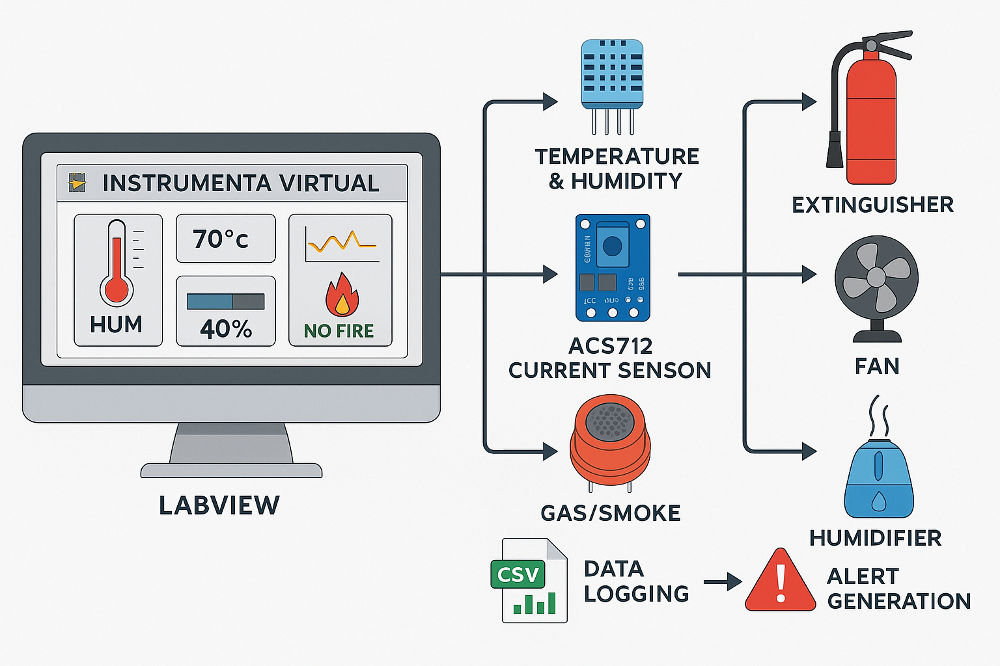
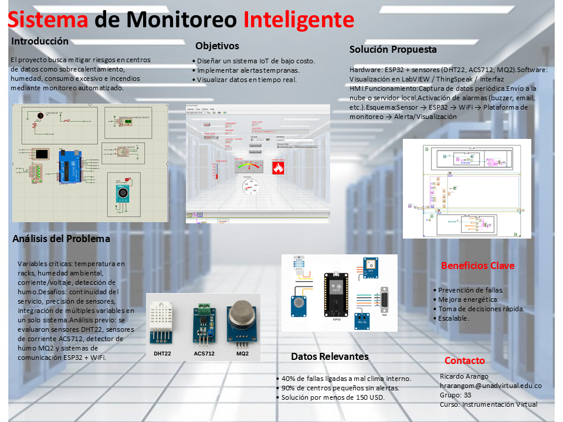
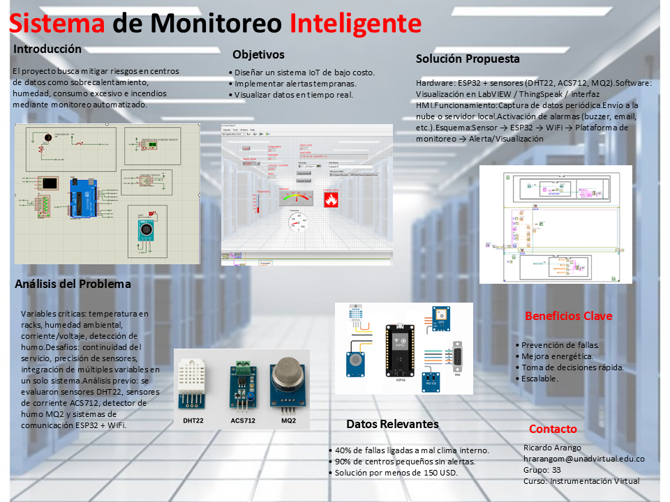

Bienvenidos a InstrumentaTech
Somos una empresa dedicada al diseño y simulación de soluciones de instrumentación virtual, enfocada en el monitoreo de variables críticas en centros de datos y entornos industriales.
Misión: Brindar soluciones innovadoras en adquisición y control de datos mediante tecnologías virtuales y simulación.
Visión: Ser líderes en desarrollo de sistemas de monitoreo virtuales a nivel nacional en los próximos cinco años.
Este sitio presenta nuestro proyecto del curso de Instrumentación Virtual, enfocado en el diseño e implementación de un sistema de adquisición de datos para un centro de datos.
Sobre Nosotros

InstrumentaTech es una empresa académica conformada por estudiantes de Ingeniería de la UNAD, comprometidos con el desarrollo de soluciones tecnológicas en instrumentación virtual.
- H. Ricardo Arango M.: Líder de diseño de hardware y simulación en Proteus.
- Cristian Ruiz Espitia: Programación del microcontrolador y manejo de datos seriales.
- German David Calderon.: Desarrollo y Monitoreo
- Luis Miguel Prado Rubio: Desarrollo de interfaz gráfica en LabVIEW y documentación técnica.
Servicios
- Diseño de sistemas de adquisición de datos (DAQ).
- Simulación de sensores y procesos físicos en Proteus.
- Desarrollo de interfaces gráficas en LabVIEW.
- Integración de comunicación serial entre dispositivos.
- Capacitación y documentación técnica de sistemas virtuales.
Portafolio de Servicios
 

Problema Planteado
Diseñar un sistema de monitoreo ambiental para un centro de datos que permita medir temperatura, humedad, corriente y presencia de gases.
Metodología
Se empleó una metodología basada en simulación por fases, utilizando Proteus, Arduino y LabVIEW. Se construyó el circuito, se programó el microcontrolador, y se diseñó la interfaz de visualización.
Fases del Proyecto
- Fase 1: Investigación sobre adquisición y acondicionamiento de señales.
- Fase 2: Simulación del sistema en Proteus.
- Fase 3: Desarrollo de interfaz gráfica en LabVIEW.
Resultados
El sistema simulado permite capturar datos ambientales, enviarlos por comunicación serial, y visualizarlos en tiempo real.
Ver video del proyecto
Preguntas Frecuentes (FAQ)
¿Qué es la instrumentación virtual? Es el uso de software para simular, visualizar y controlar variables físicas en sistemas de medición.
¿Qué ventajas ofrece este tipo de monitoreo? Bajo costo, fácil simulación, integración con múltiples sensores, monitoreo remoto.
¿El sistema se puede aplicar en entornos reales? Sí, con mínimas adaptaciones de hardware, el sistema es completamente funcional.